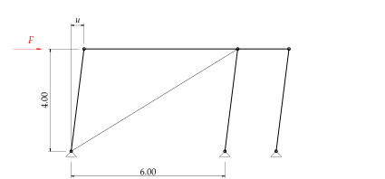
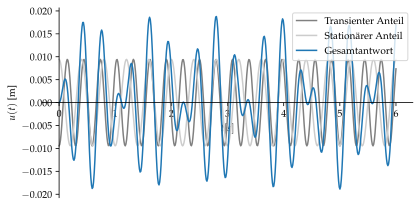

%run style_and_packages.ipynb7 Beispiel: Gesamtantwort ohne Dämpfung
7.1 Aufgabenstellung
Das System in Abbildung 7.1 zeigt ein Stabwerk, welches durch eine Werkzeugmaschine angeregt wird.
Gesucht:
- Eigenkreisfrequenz \(\omega_n\)
- Dynamischer Vergrösserungsfaktor \(V(\omega)\)
- Stationäre Antwort \(u_p(t)\) mit dem dynamischen Vergrösserungsfaktor \(V(\omega)\)
- Gesamtantwort \(u(t)\) mit den Anfangsbedingungen \(u(t=0) = 0 \text{ und } u'(t=0)=0\)
- Festigkeitsnachweis der Diagonalen
Gegeben:
- Alle Stäbe ausser Diagonalen \(E\cdot A = \infty\)
- Alle Stäbe S355
m_tot, E, H, B, Diam, f_yd, m_1, n, e = sp.symbols('m_tot, E, H, B, \oslash_Diag, f_yd, m_1, n, e')
F_0, omega, t, zeta = sp.symbols('F_0, omega, t, zeta')params = {
m_tot:5000*unit.N*unit.second**2/unit.m,
E:210*10**3*unit.N/unit.mm**2,
H:4000*unit.mm,
B:6000*unit.mm,
Diam:12*unit.mm,
f_yd:338*unit.N/unit.mm**2,
m_1:200*unit.N*unit.second**2/unit.m,
n:150/unit.minute,
e:0.1*unit.m,
zeta:0.0,
}
params_plot = convert.param_value(params)
render.dict_to_table(params)| \(B = 6000 \text{mm}\) | \(E = \frac{210000 \text{N}}{\text{mm}^{2}}\) |
| \(H = 4000 \text{mm}\) | \(\oslash_{Diag} = 12 \text{mm}\) |
| \(e = 0.1 \text{m}\) | \(f_{yd} = \frac{338 \text{N}}{\text{mm}^{2}}\) |
| \(m_{1} = \frac{200 \text{N} \text{s}^{2}}{\text{m}}\) | \(m_{tot} = \frac{5000 \text{N} \text{s}^{2}}{\text{m}}\) |
| \(n = \frac{150}{\text{minute}}\) | \(\zeta = 0.0\) |
7.2 Musterlösung
F_t = F_0 * sp.cos(omega*t)7.2.1 Systemsteifigkeit
Zur Ermittlung der Eigenkreisfrequenz wird die Steifigkeit des gesamten Systems benötigt.

Das System wird mit einer Einheitskraft belastet. Aufgrund der Eigenschaften der Pendelstäbe (lediglich Normalkräfte) und deren unendlich grossen Dehnsteifigkeit, spielt lediglich die Verformung der Diagonalen eine Rolle. Dazu gilt, dass die Diagonalen nur Zugkräfte aufnehmen können. Das bedeutet, dass letztlich ein Stab aktiv ist für die beschrieben Situation in Abbildung 7.3.
Dazu muss die Normalkraft in der Diagonalen bestimmt werden.
alpha = sp.atan(H/B)
Z_Diag = 1000*unit.N /sp.cos(alpha)
render.eq_display('alpha', alpha,
'alpha', alpha.subs(params).evalf(3),
'Z_Diag', Z_Diag,
'Z_Diag',Z_Diag.subs(params).evalf(3))\[\begin{equation}\alpha = \operatorname{atan}{\left(\frac{H}{B} \right)}\end{equation}\]
\[\begin{equation}\alpha = 0.588\end{equation}\]
\[\begin{equation}Z_{Diag} = 1000 \sqrt{1 + \frac{H^{2}}{B^{2}}} \text{N}\end{equation}\]
\[\begin{equation}Z_{Diag} = 1.2 \cdot 10^{3} \text{N}\end{equation}\]
Mittels der Arbeitsgleichung lässt sich die Verformung bestimmen. Für die Integration zweier Normalkraftverläufe gilt die folgende Beziehung:
\[ u = \frac{1}{EA_{Diag}} \int_{0}^{l_{Diag}} N_x\bar{N_x} \,dx \tag{7.1}\]
Länge der Diagonalen:
l_Diag = B /sp.cos(alpha)
A_Diag = sp.pi * Diam**2 / 4
u_for_k = 1/(E*A_Diag) * Z_Diag * Z_Diag/(1000*unit.N) * l_Diag
k = 1000*unit.N / u_for_k
render.eq_display('l_Diag', l_Diag,
'l_Diag', unit.convert_to(l_Diag.subs(params).evalf(3), unit.m),)\[\begin{equation}l_{Diag} = B \sqrt{1 + \frac{H^{2}}{B^{2}}}\end{equation}\]
\[\begin{equation}l_{Diag} = 7.21 \text{m}\end{equation}\]
Querschnittsfläche der Diagonalen:
render.eq_display('A_Diag', A_Diag,
'A_Diag', A_Diag.subs(params).evalf(3))\[\begin{equation}A_{Diag} = \frac{\pi \oslash_{Diag}^{2}}{4}\end{equation}\]
\[\begin{equation}A_{Diag} = 113.0 \text{mm}^{2}\end{equation}\]
Deformation der Diagonalen
render.eq_display(
'u_k', u_for_k,
'u_k', u_for_k.subs(params).evalf(3))\[\begin{equation}u_{k} = \frac{4000 B \left(1 + \frac{H^{2}}{B^{2}}\right)^{\frac{3}{2}} \text{N}}{\pi E \oslash_{Diag}^{2}}\end{equation}\]
\[\begin{equation}u_{k} = 0.439 \text{mm}\end{equation}\]
Steifigkeit des Systems:
render.eq_display('k', 'F/u_k',
'k', k.subs(params).evalf(3))\[\begin{equation}k = \frac{F}{u_{k}}\end{equation}\]
\[\begin{equation}k = \frac{2.28 \cdot 10^{3} \text{N}}{\text{mm}}\end{equation}\]
7.2.2 Eigenkreisfrequenz
Aus der Systemsteifigkeit lässt sich leicht die Eigenkreisfrequenz bestimmen:
\[ \omega_n =\sqrt{\frac{k}{m}} \tag{7.2}\]
omega_n = sp.sqrt(k/m_tot)
render.eq_display('omega_n', omega_n,
'omega_n', omega_n.subs(params).simplify().evalf(3))\[\begin{equation}\omega_{n} = \frac{\sqrt{\pi} \sqrt{\frac{E \oslash_{Diag}^{2}}{B m_{tot} \left(1 + \frac{H^{2}}{B^{2}}\right)^{\frac{3}{2}}}}}{2}\end{equation}\]
\[\begin{equation}\omega_{n} = \frac{21.4}{\text{s}}\end{equation}\]
7.2.3 Dynamischer Vergrösserungsfaktor
7.2.3.1 Anregungsfunktion
Zur Bestimmung des dynamischen Vergrösserungsfaktor wird die stationäre Verformung benötigt. Diese lässt sich aus der Anfangskraft der Anregungsfunktion ermitteln. Dazu wird diese Funktion benötigt. Wir wissen die Drehzahl \(n\) und die Exzentrizität \(e\) sowie deren Masse \(m_1\).
f = unit.convert_to(n.subs(params),unit.second)
omega = 2*sp.pi*f
params['omega'] = omega.subs(params).simplify()
render.eq_display('f', 'n',
'f', f.evalf(3),
'omega', '2*pi*f',
'omega', omega.evalf(3),
)\[\begin{equation}f = n\end{equation}\]
\[\begin{equation}f = \frac{2.5}{\text{s}}\end{equation}\]
\[\begin{equation}\omega = 2 \pi f\end{equation}\]
\[\begin{equation}\omega = \frac{15.7}{\text{s}}\end{equation}\]
Nun fehlt lediglich die Anfangskraft \(F_0\). Die Fliehkraft \(F\) der 2 gegenläufig rotierenden Massen bewirken eine addierende Fliehkraft in horizontaler Richtung zu:
\[ F_0 = 2(m_1 \cdot e \cdot \omega^2) \tag{7.3}\]
F_0 = 2*(m_1*e*omega**2)
params['F_0'] = F_0.subs(params).simplify()
render.eq_display('F_0', F_0,
'F_0', F_0.subs(params).simplify().evalf(3))\[\begin{equation}F_{0} = \frac{50 \pi^{2} e m_{1}}{\text{s}^{2}}\end{equation}\]
\[\begin{equation}F_{0} = 9.87 \cdot 10^{3} \text{N}\end{equation}\]
7.2.3.2 Statische Deformation
Die statische Deformation lässt sich nun leicht anhand der ermittelten Systemsteifigkeit herleiten.
u_0 = F_0/k
render.eq_display(
'u_0', 'F_0/k',
'u_0', u_0.subs(params).simplify().evalf(3))\[\begin{equation}u_{0} = \frac{F_{0}}{k}\end{equation}\]
\[\begin{equation}u_{0} = 4.33 \text{mm}\end{equation}\]
7.2.3.3 Vergrösserungsfaktor
V_omega = 1/(sp.sqrt((1-(omega/omega_n)**2)**2 + (2*zeta*(omega/omega_n))**2))
render.eq_display('V(omega)', '1/(sqrt((1-(omega/omega_n)**2)**2 + (2*zeta_*(omega/omega_n))**2))',
'V(omega)', V_omega.subs(params).simplify().evalf(3))\[\begin{equation}V{\left(\omega \right)} = \frac{1}{\sqrt{\frac{4 \omega^{2} \zeta_{}^{2}}{\omega_{n}^{2}} + \left(- \frac{\omega^{2}}{\omega_{n}^{2}} + 1\right)^{2}}}\end{equation}\]
\[\begin{equation}V{\left(\omega \right)} = 2.18\end{equation}\]
7.2.4 Stationäre Antwort
Es handelt sich um einen ungedämpften Einmassenschwinger mit einer harmonischen Anregungsfunktion. Die Bewegungsgleichung ist die folgende:
\[ mu''(t)+ ku(t) = F(t) \tag{7.4}\]
Dies ist eine inhomogene Differentialgleichung 2. Ordnung. Die Lösung dieser lässt sich in einen partikulären Anteil und in einen homogenen Anteil aufteilen. Der partikuläre Anteil entspricht der stationären Antwort. Der homogene Anteil nennt sich transienter Anteil. Wäre eine Dämpfung im System vorhanden, so startet der Schwungvorgang aus einer Kombination beider Teile. Aufgrund der Dämpfung verschwindet der stationäre Anteil und das System wird schlussendlich nur noch durch den transienten Anteil deformiert.
Anhand des Vergrösserungsfaktor kann die stationäre dynamische Antwort des Systems mit der folgenden Beziehung ermittelt werden.
\[ u_p = V(\omega)u_0 \cdot \cos{(\omega t)} \tag{7.5}\]
u_p = V_omega * u_0 *sp.cos(omega *t)
render.eq_display('u_p', u_p.subs(params).simplify().evalf(3))\[\begin{equation}u_{p} = 9.43 \cos{\left(\frac{5 \pi t}{\text{s}} \right)} \text{mm}\end{equation}\]
7.2.5 Gesamtantwort
Für die Gesamtantwort wird nun noch der homogene Anteil benötigt. Dazu ist die folgende Differentialgleichung zu lösen.
\[ mu''(t)+ ku(t) = 0 \tag{7.6}\]
Als Ansatzfunktion dient die folgende Gleichung:
\[ u_h = A_1\cos{(\omega_n t)} + A_2 \sin{(\omega_n t)} \tag{7.7}\]
Die Randbedingungen sind in der Aufgabenstellung definiert und sind die folgenden:
\(u(t=0)=0\)
\(u'(t=0)=0\)
Vorsicht, die Randbedingungen gelten für die gesamte Lösung:
\[ u(t) = u_h(t) + u_p(t) \tag{7.8}\]
A_1, A_2 = sp.symbols('A_1:3')
u_h_ansatz = A_1 * sp.cos(omega_n*t)+A_2*sp.sin(omega_n*t)
randbedingung_1 = (u_h_ansatz+u_p).subs(t,0)
randbedingung_2 = sp.diff((u_h_ansatz+u_p),t).subs(t,0)
A_solve = sp.solve([randbedingung_1, randbedingung_2], [A_1, A_2], dict=True)[0]
u_h = u_h_ansatz.subs(A_solve)
u_t = u_h+u_p
u_t_plot = u_t.subs(params_plot).subs(unit.second, 1)
u_p_plot = u_p.subs(params_plot).subs(unit.second, 1)
u_h_plot = u_h.subs(params_plot).subs(unit.second, 1)
p_1 = sp.plot(u_h_plot, (t,0,6), adaptive=False, nb_of_points=500,
xlabel='$t [s]$',
ylabel='$u(t)$ [m]',
size=(5.9,3),show=False,label='Transienter Anteil', legend=True, line_color='0.5')
p_2 = sp.plot(u_p_plot, (t,0,6), adaptive=False, nb_of_points=500,show=False,label='Stationärer Anteil', line_color='0.8')
p_3 = sp.plot(u_t_plot, (t,0,6), adaptive=False, nb_of_points=500,show=False,label='Gesamtantwort')
p_1.append(p_2[0])
p_1.append(p_3[0])
p_1.show()
7.2.6 Festigkeitsnachweis
Aufgrund der maximalen Auslenkung, kann die maximale Normalkraft auf der Diagonalen bestimmt werden.
7.2.6.1 Maximale Auslenkung
Aus dem Plot in Abbildung 7.4 ist die maximale Auslenkung ersichtlich. Die Ermittlung des Zeitpunkts bei einer maximalen Auslenkung wird hier numerisch gelöst.
t_max_auslenkung = sp.nsolve(sp.diff(u_t_plot,t), t,(2.6,2.8))
u_max = u_t_plot.subs(t,t_max_auslenkung)
render.eq_display('t_max', (t_max_auslenkung*unit.second).evalf(3),
'u_max', (u_max*unit.m).evalf(3))\[\begin{equation}t_{max} = 2.8 \text{s}\end{equation}\]
\[\begin{equation}u_{max} = 0.0188 \text{m}\end{equation}\]
7.2.6.2 Maximale Einwirkung
Aufgrund der maximalen Amplitude verlängert sich die Diagonale um \(\Delta l = u_{max}\). Die Dehnung des Stabs ist somit die \(\frac{\Delta l}{l_{Diag}}\). Bei linear elastischem Materialverhalten gilt die folgende Beziehung:
\[ \sigma = \varepsilon E \tag{7.9}\]
epsilon = u_max*unit.m / sp.cos(alpha) / l_Diag
sigma = epsilon*E
Nachweis = sigma / f_yd
render.eq_display('varepsilon', epsilon.subs(params).simplify().evalf(3),
'sigma', unit.convert_to(sigma.subs(params).simplify().evalf(3), unit.mm**2),
'f_yd', f_yd.subs(params),
'Nachweis', 'sigma / f_yd',
'Nachweis', Nachweis.subs(params).simplify().evalf(3))\[\begin{equation}\varepsilon = 0.00314\end{equation}\]
\[\begin{equation}\sigma = \frac{659.0 \text{N}}{\text{mm}^{2}}\end{equation}\]
\[\begin{equation}f_{yd} = \frac{338 \text{N}}{\text{mm}^{2}}\end{equation}\]
\[\begin{equation}Nachweis = \frac{\sigma}{f_{yd}}\end{equation}\]
\[\begin{equation}Nachweis = 1.95\end{equation}\]
Die Diagonale würde plastifizieren, so dass die linearen Annahmen für die Berechnung der Systemantwort nicht angewendet werden dürfen.